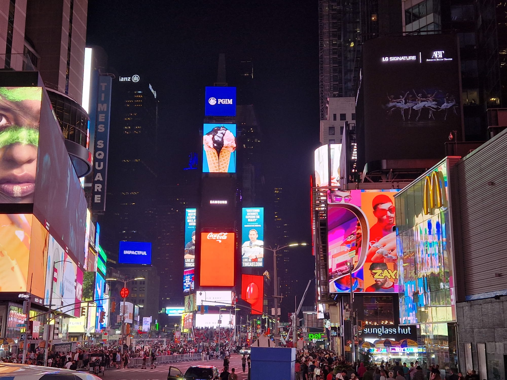
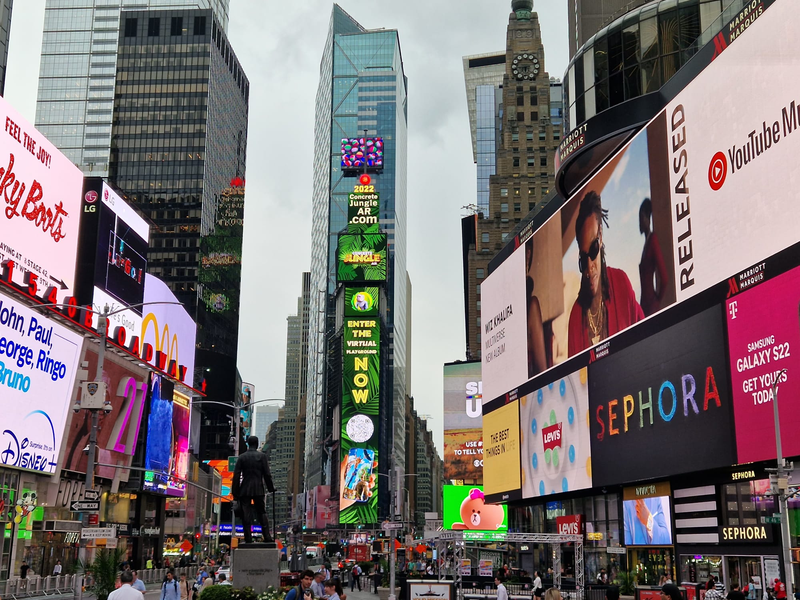
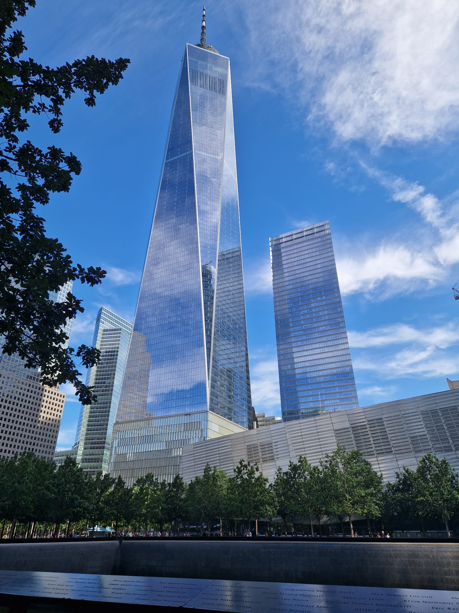
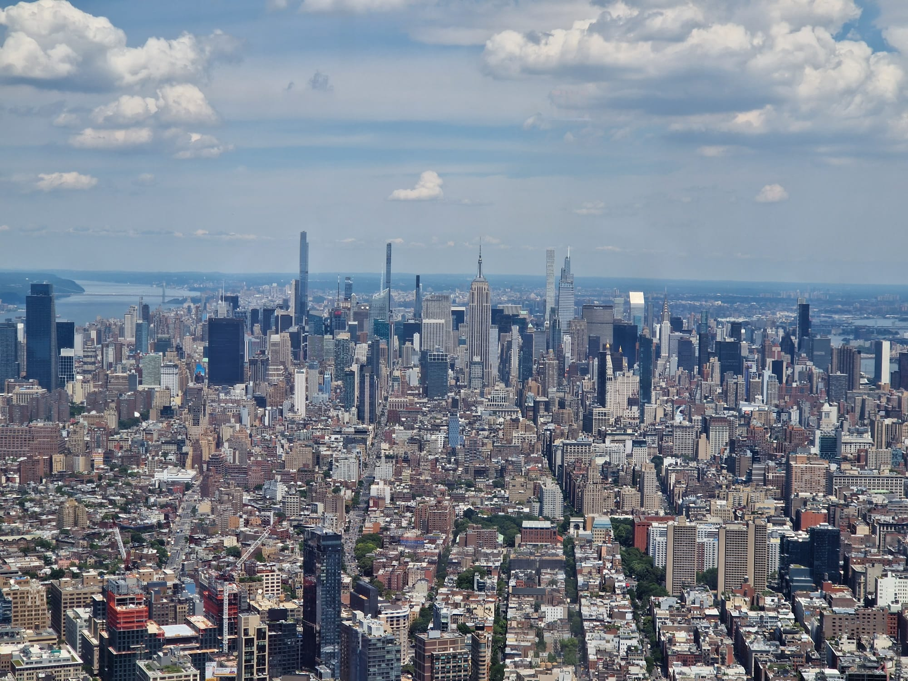
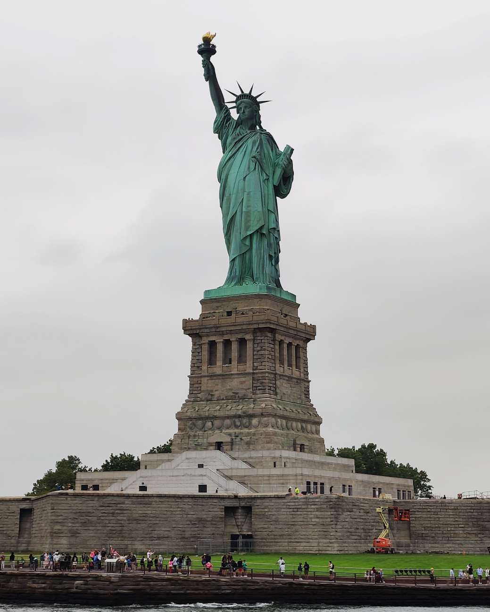
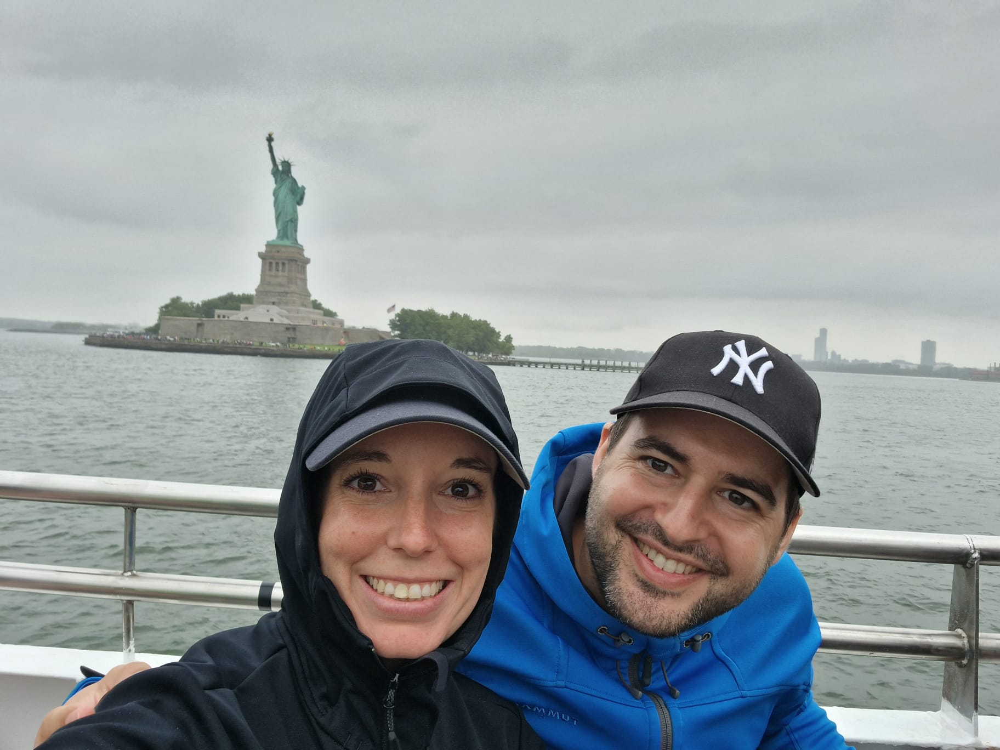
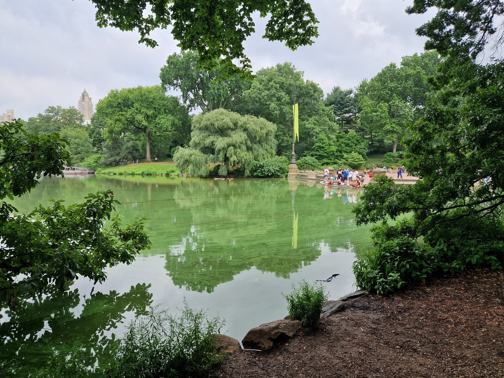
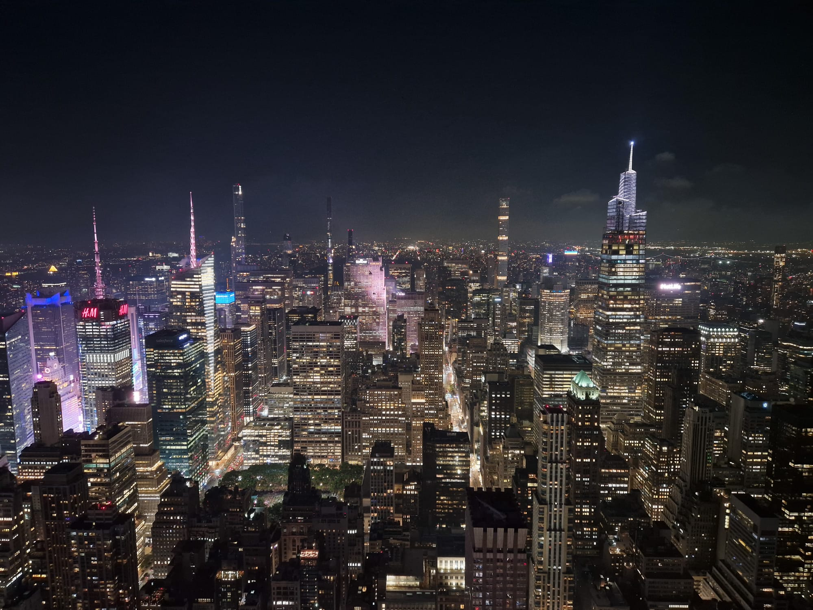
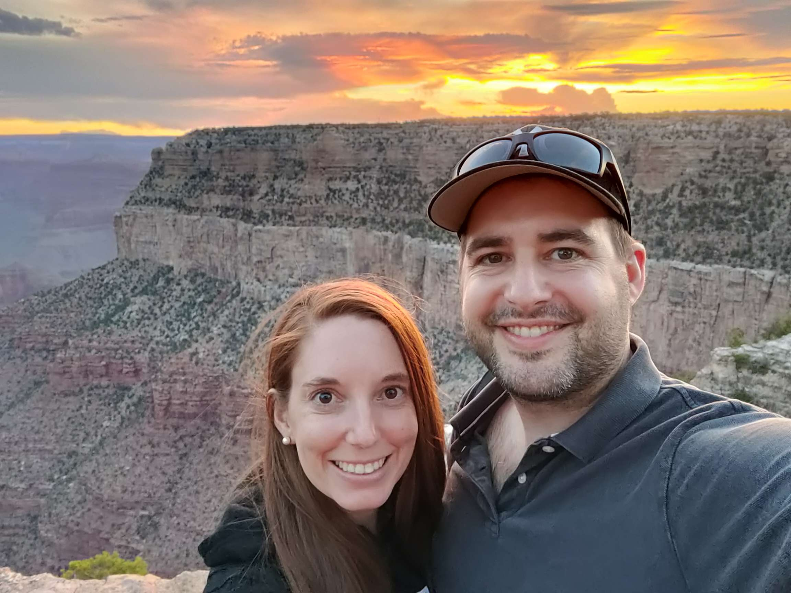

New York
Nach 6 Stunden Flug sind wir gut in New York (Newark) gelandet. Mimi hatte bereits vorgängig mittels App die Information erhalten, dass ihr Koffer bereits mit einem früheren Flug von San Francisco nach New York geflogen ist und sie den Koffer am Schalter abholen kann. Während Mimi ihren Koffer also bereits nach wenigen Minuten in der Hand hatte, wartete Remo geduldig am Gepäckband....wartete noch ein bisschen...und noch ein bisschen länger. Mittlerweile wartete er bereits eine Stunde und sein Koffer war noch immer nicht da und nun wurde auch das Gepäckband abgestellt. Ojee, wo blieb bloss der Koffer?! Gemäss dem schlauen United Airlines App wurde der Koffer nämlich als pünktlich eingetroffen angegeben. Da er offensichtlich nicht kam, meldete sich Remo nun ebenfalls am Schalter...und siehe da, auch sein Koffer war schon mit einem früheren Flug angekommen. Zum Glück haben wir nun über eine Stunde dafür gewartet.🙈 Nun wollten wir keine Zeit mehr verlieren und fuhren mit einem Taxi nach Manhatten, wo sich unser Hotel ganz nahe am Times Square befand. Nachdem wir das Zimmer bezogen hatten, liefen wir sofort los in Richtung Times Square, wo Remo nicht mehr aufhören konnte all die grossen LED Bildschirme zu bestaunen. Wir kämpften uns nun durch die Massen von Leuten, welche sich am Times Square tummelten. Gleich am ersten Abend musste es natürlich ein Burger im Hard Rock Café sein. 🍔  Den nächsten Tag starteten wir dort wo wir den letzten beendet hatten: am Times Square! Mit Kaffee und "Zmorge to go", sassen wir mitten auf dem Times Square. Natürlich nicht auf dem Boden, sondern auf den extra dort vorhandenen Stühlen. Dabei hatte Remo die Gelegenheit die übergrossen Screens erneut zu bestaunen. 😉  Anschliessend machten wir uns auf den Weg zur U-Bahn, mit welcher wir bis zum World Trade Center fuhren. Dort besuchten wir zuerst den Ground Zero und anschliessend das 9/11 Memorial Museum. Dies war soo emotional beeindruckend, dass sogar knallharte Männer, wie Remo natürlich einer ist, feuchte Augen bekamen. Eine wirklich lohnenswerte Sehenswürdigkeit, wenn man in New York ist.  Nachdem wir den emotionalen Teil beendet hatten, begaben wir uns zum One World Trade Center und fuhren dort mit dem Lift zum Obervatorium hinauf, wo man einen 360° Umblick über New York hat. Obwohl es hier keine Bildschirme, sondern nur richtige Fenster hatte, war Remo wieder total begeistert vom Anblick. Von dort konnte man über ganz Mannhatten sehen und auch die Freiheitsstatue war gut zu sehen. Einfach top. Ein weiteres "Muss" wenn man in der Stadt ist 😉  Da wir uns bisher noch ein bisschen wenig bewegt hatten, entschieden wir uns, nach einem kleinen Abstecher zum Battery Park, von dort aus bis zum Times Square zu laufen. Was auf Google Maps nach einem Einstunden-Spatziergang aussah, entwickelte sich zu einem neuen Tagesrekord der zurückgelegten Schritte, während unserer Flitterwochen. Müde, hungrig und mit schmerzenden Füssen und Beinen schafften wir es noch knapp etwas zu Abend zu essen und uns anschliessend ins Hotel zurückzuschleifen.😬 Der neue Tag begann leider mit vielen dunklen Wolken am Himmel. Nachdem wir mehrere Wetterberichte eingesehen hatten, entschieden wir uns eine kleine Schifffahrt zu buchen. Also gingen wir, zuerst zu Starbucks, um einen Kaffee und etwas zu essen zu besorgen und liefen dann wie richtige Amerikaner mit dem Kaffeebecher in der Hand in Richtung Pier 83 am Hudson River. Bei unserer Ankuft begann sogleich das boarding des Schiffes und somit konnten wir gute Plätze auf dem oberen Deck ergattern. Zuerst fuhr das Schiff südwerts dem Hudson River entlang und dann bis zur Freiheitsstatue hinaus.  Nun hatten wir es also doch noch geschafft die Freiheitsstatue aus der Nähe zu sehen. Genau als das Schiff in Richtung Eastriver losfuhr begann es auch noch zu regnen. Zum Glück waren wir mit Jacke, Hut und Kaputze ausgestattet, wodurch es für uns nicht ganz so unangenehm war.  Auf unserer Route fuhren wir nun noch unter der Brooklin Bridge hindurch, am UN-Hauptsitz vorbei, ebenso am Yankee Baseball Stadion und noch vielem mehr. Nach gut 2.5 Stunden endete die Schifffahrt wieder am Pier 83. Von dort aus liefen wir zum Times Square, um einen Hot Dog zu geniessen. Dann machten wir uns auf den Weg entlang der 5th Avenue, um noch ein paar Läden abzuklappern. Leider wurden wir erneut enttäuscht, denn es gab einfach nichts, das sich zum kaufen gelohnt hätte. Mittlerweile hatte es auch wieder aufgehört zu regnen und somit liefen wir weiter bis wir den Central Park erreicht hatten. Dieser zu besichtigen und einige Wege darin zu gehen, war auf jeden Fall lohnenswert.  Danach machten wir uns auf den Rückweg zum Times Square, wo wir zum letzten Mal während unserer Flitterwochen ein Restaurant für das Abendessen aufsuchten. Während dem Essen...naja also zwischen der Bestellung und dem Essen... entschieden wir, später noch auf das Empire State Building zu gehen und kauften auch sogleich die Tickets online. Daher liefen wir nach dem Essen los in Richtung Süden. Dort fuhren wir dann mit dem Lift in das 86. Geschoss, von wo aus man eine tolle Aussicht über die Stadt hat. Da in der Zwischenzeit bereits die Sonne untergegangen war, war es zusätzlich spannend die Stadt mit all den Lichtern zu sehen. Und was man natürlich nicht vergessen darf: der Mond war ebenfalls super toll zu sehen😉  Nun war bereits der letzte Tag unserer Flitterwochen angebrochen. Nachdem wir im Hotel ausgecheckt hatten und unser Gepäck noch für den Tag dort abgeben konnten, liefen wir erneut in Richtung Times Square, um zu Frühstücken. Da Mimi bisher in New York mit ihrer Polizei-Patch-Suche noch kein Glück gehab hatte, begaben wir uns zu einem Polizeiposten. Dieser wurde uns von einem Polizisten am Times Square angegeben, weil dort die Chance auf einen Patch wohl am grössten sei. Und er hatte recht! Bereits der erste Polizist, welcher uns vor dem Posten entgegenkam, konnte Mimi einen Patch geben. 😊 Danach gingen wir erneut zum Central Park, in welchem wir uns noch bis nach dem Mittag mit Spatzieren verweilten und sogar für Mimi noch unbekannte Wege entdeckten. Am frühen Nachmittag führte uns der Weg wieder zurück in die Stadt, ein letztes Mal an den Times Square. Danach hiess es unser Gepäck im Hotel abholen und mit dem bereits bestellten Shuttleservice an den Flughafen zu fahren. Da es auch hier wieder hiess, dass man mit längeren Wartezeiten am Flughafen rechnen müsse, was dann aber absolut nicht der Fall war, waren wir einmal mehr viel zu früh am Flughafen. Während wir also darauf warteten, dass wir unseren Nachhauseflug antreten konnten, nutzten wir die Zeit, um auch unseren letzten Reiseblogeintrag zu schreiben. Wir hoffen, dass es euch Spass gemacht hat, unseren Blog und dadurch auch unsere Reise etwas zu verfolgen. Mimi & Remo 